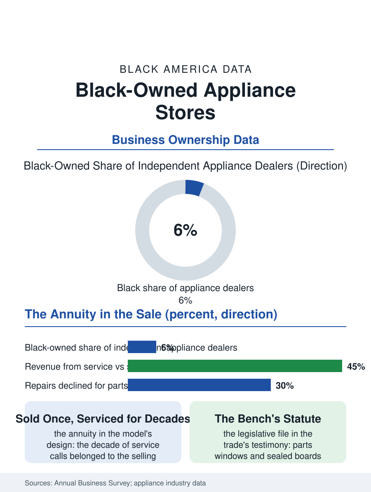

Black Business
The Truck's Knowledge: Black-Owned Appliance Stores
The dealer who sold the refrigerator to the grandmother and repairs it for the granddaughter. The appliance file.

The appliance store that also repairs is a vanishing hybrid: the dealer who sold the refrigerator and then kept it running for twenty years, whose service truck was the warranty the manufacturer never wrote. The Black-owned appliance dealer descends from the radio and television shops of the electronics file's golden age. The business census counts the appliance stores in the thousands, the service-attached independents a falling share. This article reads the appliance file.
Sell It, Then Keep It Running
The model's genius was the annuity disguised as a sale: the appliance's decade of service calls, the parts and the labor of its middle age, belonged to the dealer who sold it, whose knowledge of the individual machine's history was the customer's reason to buy the next one from the same counter, a loyalty the big box's price has spent fifty years trying to purchase without the truck. The Black dealer's historical tier included the radio and TV shops of the postwar districts, the repair bench being among the first technical businesses open to the trained Black serviceman of the electronics trade schools, and the store's counter a fixture of the corridor's service economy beside the parts store's. The brand's authorization was the dealer's gate as in the other dealer files, the manufacturers' allocation of the franchise by the territory's politics, with the independent's modern form being the buying group's banner over the family's name in the parts file's pattern. The laundry pair's commercial cousin, the laundromat's equipment service, is the dealer's hidden volume in the trade data, the apartment and institutional machines' contracts giving the service department its base load between the households' calls, and the dealer who holds the laundromats' accounts holds the neighborhood's wash in a second sense. The scratch-and-dent and the floor model's discount theater at the store's margins performs the price's honesty the big box's promotions imitate, the customer who buys the dented range buying the dealer's candor as part of the appliance.
The Sealed System and the Right to Repair
The product's own evolution is the file's adversary: the appliance's electronics sealed the repair into the board swap, the parts' availability windows shortened by the manufacturers' design, and the disposable price point of the import's low end converted the repair call into the replacement sale the dealer does not make, so that the service annuity starves from both ends in the pattern the right-to-repair movement has made a legislative file, its state laws on the parts and the manuals being, in the trade's own testimony, substantially about whether the independent dealer and the repair bench survive as categories. The survivors' tiers are the premium brand's service-led dealership and the used and refurbished appliance trade of the resale pattern, whose stores supply the landlord and the first apartment at the price the neighborhood sets, with the warranty they write themselves.
The Truck's Knowledge
The appliance file closes on the service call's intimacy, the technician in the kitchen where the machine failed, trusted with the home's interior as the locksmith is with its threshold, the dealer family's name being the bond in both files. The trade's knowledge, the model years' weaknesses memorized across the decades, is an archive the sealed product is retiring unrecorded, a loss the repair movement's documentation projects now race. The census counts the appliance stores in decline as a category. The file's last entry is the refrigerator's hum restored at the evening call, the dealer who sold it to the grandmother repairing it for the granddaughter in the same kitchen, a continuity of service that the platform's warehouse, for all its price, has never once offered to match, which is the file's whole argument in a single hum. The parts wall behind the counter, the belts and the elements and the igniters in their labeled bins, is the store's true library, its keeper's knowledge cataloged in cardboard, and its like is not being reprinted. The bins' labels are in the keeper's hand across forty years of keepers, the newest in the same script the founder taught, the archive's continuity a handwriting. When the last bin's label fades, the knowledge goes with it, unreplaced. So the hum, for now, continues.
More in Black Business
Black-Owned Businesses: Counts, Receipts, and the Representation Gap
About 161,000 Black-owned employer firms and three million solo ventures: how the Census Bureau counts Black business ownership, where firms concentrate, and the gap between population share and business share.
Black Median Net Worth: The Wealth Gap in Federal Reserve Data
The Federal Reserve puts Black median family net worth at $44,900, against $285,000 for White families — about 16 cents on the dollar. The widest gap in economic data.
Black Buying Power: The $1.8 Trillion Consumer Economy
Black buying power is estimated at about $1.8 trillion — larger than the economy of most nations. What the figure measures, who produces it, and what it buys.
Source: U.S. Census Bureau, Annual Business Survey for appliance stores; Association of Home Appliance Manufacturers and repair industry data.